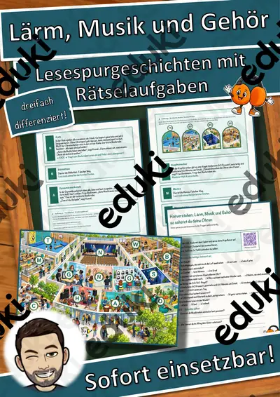

Lesespur: Warm eingepackt: wie Dämmung ein Haus schützt – Lesespurgeschichte mit Rätseln (Klasse 8)
Warm eingepackt – wie Dämmung ein Haus schützt – Lesespurgeschichte Technik (Klasse 8)Schick deine Klasse auf eine Lesespur über eine Winterbaustelle! Sara und Jonas aus der 8a besuchen mit ihrer Lehrerin ein altes Wohnhaus, das gedämmt wird: Im Bauwagen zeigt die Energieberaterin Wärmebilder, am Altbau geht es um Wärmebrücken, am Gerüst klebt der Maurer Dämmplatten an die Fassade, auf dem Dachboden kommt Mineralwolle zwischen die Sparren, im Materiallager werden Dämmstoffe verglichen und im Musterhaus wird klar, warum man trotz dichter Hülle lüften muss. Zum Schluss baut die Klasse im Werkraum einen eigenen Versuch. Am Ende jedes Abschnitts verrät ein Hinweis den nächsten Ort auf dem Plan – nur wer genau liest, findet den Weg und sammelt alle geheimen Buchstaben zum Lösungswort.
Die perfekte Lesespur für Technik in der 8. Klasse – ideal für die Bautechnik (Baustoffe, Wärmeschutz, Gebäudehülle), für den Winter, für Vertretungsstunden und fächerübergreifend mit Physik, Deutsch und Mathematik. Das Material ist SOFORT EINSETZBAR und in DREI DIFFERENZIERUNGSSTUFEN (leicht ★ / mittel ★★ / schwer ★★★) angelegt.WICHTIG: Das komplette Material ist sowohl in FARBE als auch in SCHWARZ-WEISS enthalten – ideal zum Sparen von Druckkosten.DAS IST ENTHALTEN
- Lesespurgeschichte in 3 Niveaus (leicht, mittel, schwer)
- farbiger Plan als Suchkarte
- Hörverstehen mit QR-Code zur MP3 (selbstständiges Hören mit Kopfhörern)
- vier Aufträge auf dem Weg: eine Zuordnung, ein Quiz, eine Rechenaufgabe und ein Steckbrief
- Rätselseite (Wörter-Suchsel + Fragen rund um die Wärmedämmung)
- Ausmalbild zum Thema
- ausführliches Lösungsblatt für die Lehrkraft
- alles zusätzlich als komplette Schwarz-Weiß-VarianteSO GEHT DIE LESESPURDie Schülerinnen und Schüler lesen ab START, finden im Text den nächsten Ort, suchen ihn auf dem Plan und lesen bei dieser Station weiter. An jeder richtigen Station gibt es einen Buchstaben. Eingeplante Sackgassen (Kran, Bagger, Schuttcontainer, Toilettenwagen) sind keine Stationen und dienen der Selbstkontrolle. Am Ende werden die gesammelten Buchstaben umgestellt und ergeben ein geheimes Lösungswort. (Die Lösungen sind selbstverständlich nur im Lösungsblatt für die Lehrkraft enthalten.)INHALTLICHER SCHWERPUNKTWärmeschutz am Gebäude: Gebäudehülle, Wärmetransport vom Warmen zum Kalten, Wärmebild und Wärmebrücken, Wärmedämmverbundsystem, Zwischensparrendämmung, Dämmstoffe und Wärmeleitfähigkeit, luftdichte Hülle und richtiges Lüften, Arbeitsschutz auf der Baustelle.ABGEDECKTER LEHRPLAN (Klasse 8)
- Technik (LehrplanPLUS Bayern, Mittelschule) – Jahrgangsstufe 8: Bautechnik – Baustoffe, Wärmeschutz und Gebäudehülle; Realschule Werken.
- Mathematik – Jahrgangsstufe 8: Sachaufgaben mit Flächen und Dezimalzahlen.
- Deutsch – Jahrgangsstufe 8: Sachtexte sinnentnehmend lesen; Zuhören: einem Hörtext gezielt Informationen entnehmen (Hörverstehen mit MP3).Geeignet für Freiarbeit, Stationenlernen, Vertretungsstunden, Wochenplan und als Einstieg in das Thema Bauen und Energiesparen. Klassenstufe 8.
Ähnliche Materialien

Haus Lückentext mit Wortspeicher Hörverstehen und Suchsel

Altes Ägypten Lückentext mit Wortspeicher Hörverstehen und Suchsel

Lesespur: Das Haus der Grundrechte – Lesespurgeschichte mit Rätseln (Klasse 9)

Lesespur: Lärm, Musik und Gehör: so schützt du deine Ohren – Lesespurgeschichte mit Rätseln (Klasse 6)

Lesespur: Kinderrechte bei uns: wer sie schützt – Lesespurgeschichte mit Rätseln (Klasse 10)

Lesespur: Smart Home: das vernetzte Haus – Lesespurgeschichte mit Rätseln (Klasse 8)

Weißes Haus Lückentext mit Wortspeicher Hörverstehen und Suchsel